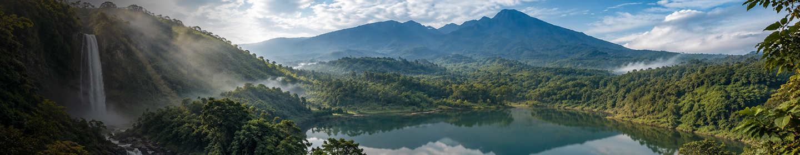
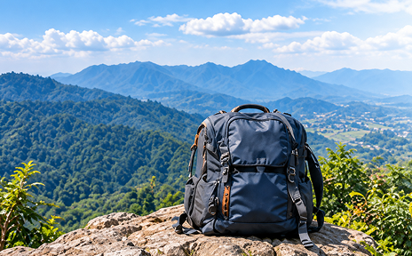

water_drop
Curug/Air Terjun


Temukan rute resmi, estimasi biaya riil, dan kondisi lapangan curug, danau, serta gunung atau bukit di Bogor tanpa khawatir pungli atau tersesat.
Eksplorasi berbagai destinasi wisata alam terbaik dengan informasi lengkap dan terverifikasi.
Karena perjalanan aman berawal dari informasi yang tepat.
Data resmi dari pengelola & komunitas lokal
Bisa diakses offline saat sinyal hilang
Hindari overbudget dan pungli
Bersama jaga alam dan wisata yang berkelanjutan


Temukan berbagai destinasi wisata alam di Bogor, mulai dari curug, danau, hingga jalur bukit trekking. Pilih destinasi favoritmu dan nikmati perjalanan yang lebih aman, nyaman, dan terencana.
Eksplorasi berbagai destinasi wisata alam terbaik dengan informasi lengkap dan terverifikasi.



Jika kamu mengalami keadaan darurat, membutuhkan informasi penting, atau menghadapi kendala saat berwisata, berikut langkah mudah dan panduan yang bisa kamu ikuti.
Tetap tenang, ikuti langkah berikut untuk mendapatkan bantuan dengan cepat.
Segera hubungi nomor darurat terdekat.
Berikan informasi lokasi yang jelas dan detail.
Sampaikan jenis bantuan yang dibutuhkan.
Jangan meninggalkan lokasi sebelum ada konfirmasi bantuan.
Ikuti arahan petugas dan jaga keselamatan diri serta sekitar.
Persiapan yang baik, perjalanan yang lebih aman.
Gunakan perlengkapan yang sesuai.
Bawa air minum dan makanan secukupnya.
Pastikan baterai HP penuh dan aktifkan mode offline.
Gunakan pakaian dan alas kaki yang nyaman.
Jangan berwisata sendirian, utamakan kebersamaan.

Akses informasi penting yang mungkin kamu butuhkan selama perjalanan.
Polisi, Ambulans, Pemadam Kebakaran, dan layanan darurat lainnya
Puskesmas, klinik, dan rumah sakit terdekat di sekitar area wisata
Cek kondisi cuaca terkini dan peringatan dini sebelum berangkat
Hal-hal yang perlu diperhatikan selama berwisata di alam.
Kenali potensi bahaya, cara menghindari pungli dan tips keselamatan lainnya.
Untuk pertanyaan, saran, atau informasi tambahan.
Temukan jawaban dari pertanyaan umum seputar bantuan darurat dan keamanan wisata.
Tetap tenang dan berhenti di tempat yang aman. Hubungi nomor darurat 112 atau Basarnas 115, kirimkan koordinat lokasi terakhirmu jika ada sinyal, dan hemat daya baterai ponselmu.
Catat waktu, lokasi, dan bukti kejadian (foto/video/tiket tidak resmi), lalu laporkan ke pihak pengelola resmi destinasi atau melalui kanal pengaduan resmi LAPOR! (lapor.go.id).
Sebagian besar destinasi wisata alam resmi sudah mencakup asuransi pada tiket masuk resmi. Pastikan selalu meminta karcis retribusi resmi di pintu masuk.
Lakukan pertolongan pertama (P3K) sesegera mungkin, jangan memaksakan bergerak bila mengalami dislokasi/patah tulang, dan segera hubungi petugas pos jaga terdekat atau ambulans 119.
Destinasi pendakian gunung dan curug di Bogor umumnya memiliki posko SAR lokal dan pengelola ranger. Dalam kondisi darurat berat, tim gabungan Basarnas akan dikerahkan.
Informasi cuaca terkini dan radar hujan real-time di kawasan Bogor dapat diakses langsung melalui portal resmi BMKG (bmkg.go.id) atau aplikasi Info BMKG.